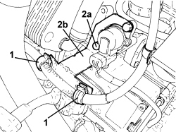
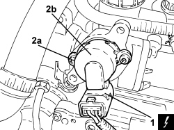
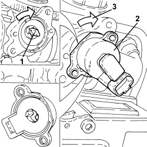

2127E44 HYDRAULIC SELECTION GEARBOX CLUTCH POSITION SENSOR - R.R.
- Path
- Procedures > 21 GEARBOX UNIT > 2127 ELECTRO-HYDRAULIC SELECTION GEARBOX EXTERNAL CONTROLS > 2127E GEAR CONTROL SELECTION ELECTRIC SYSTEM > 2127E44 HYDRAULIC SELECTION GEARBOX CLUTCH POSITION SENSOR - R.R.
- Kind
- repair procedure (removal / refitting; the operation number is the code)
- Applies to
- engines: 2.2 JTS; all production periods
- Interactive page
- https://sloeber94.github.io/elrnDB-aBrrSpdr/en/#/946004318
Applies to: engines: 2.2 JTS; all production periods
 Removing
Removing
 Refitting
Refitting- Place the gear lever in N.
Op. 5530B52 BATTERY SUPPORT/DRIP TRAY - R.R
1. Open the starter motor supply lead retaining clips.
2. Undo the bolts (2a) and remove the wiring mounting bracket (2b).

Applies to: engines: 2.2 JTS; all production periods
1. Disconnect the electrical connection for the clutch position sensor.
Description | Connector | |
|---|---|---|
1 | Clutch position potentiometer |
2. Undo the bolts (2a) and remove the clutch position sensor (2b).

Applies to: engines: 2.2 JTS; all production periods
Refitting
Removing1. Rotate the engagement pin in a clockwise direction until it is in the end of travel position.
2. Position the sensor as illustrated in order to engage the pin positioned previously in line with the reference mark on the sensor.
3. Rotate in a clockwise direction (preloading) until the openings are aligned and then press the sensor into place.

Applies to: engines: 2.2 JTS; all production periods
- Screw in the clutch sensor fixing bolts and tighten them to the specified torque.
Component | Fastening | dia | Value (daNm) | Validity |
|---|---|---|---|---|
Clutch position sensor | Bolt | - | 0.3 ÷ 0.42 | 2.2 JTS |
- Connect the electrical connection for the clutch position sensor.
Applies to: engines: 2.2 JTS; all production periods
- Place the wiring mounting bracket in its housing and secure it using the bolts.
- Position the starter motor supply lead and secure it using the retaining clips.